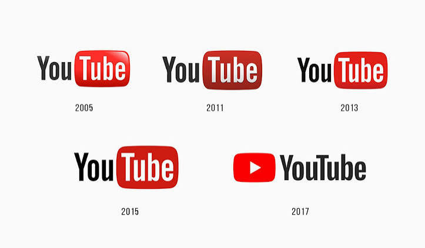

Historie sociální sítě
YouTube
Od jednoduchého videoportálu ke globální platformě
- Rok založení
- 2005
- Zakladatelé
- Chad Hurley, Steve Chen a Jawed Karim
Vývoj loga YouTube

Od prvního videa k celému světu
YouTube založili v roce 2005 bývalí zaměstnanci PayPalu Chad Hurley, Steve Chen a Jawed Karim. Chtěli vytvořit jednoduché místo, kde může kdokoli nahrát a sdílet video. První video, nazvané „Me at the zoo“, nahrál Jawed Karim 23. dubna 2005.
Video dostupné každému
Jednou z hlavních překážek sdílení videa na začátku internetu byly velké soubory a potřeba zvláštního přehrávače. YouTube zjednodušil nahrávání i přehrávání přímo v prohlížeči. První rozšíření služby ukázalo, že lidé chtějí sdílet nejen profesionální tvorbu, ale také běžné okamžiky, návody a osobní komentáře.
Akvizice Googlem v roce 2006 poskytla platformě zázemí pro růst a pozdější podporu vyšší kvality obrazu, mobilního sledování i živého vysílání. Partnerský program umožnil některým tvůrcům získávat podíl z reklamních příjmů a proměnil amatérské natáčení v dlouhodobou profesní dráhu.
Tvůrci, doporučování a Shorts
YouTube se rozrostl do rozsáhlé knihovny hudby, vzdělávacích videí, recenzí, herních přenosů a dokumentů. Kanály a odběry pomáhají divákům vracet se k oblíbeným tvůrcům, zatímco vyhledávání a doporučování nabízejí další videa. Pro vydavatele a umělce se platforma stala důležitým místem distribuce i komunikace s publikem.
Formát Shorts přinesl krátká vertikální videa přímo do stejné služby. YouTube dnes propojuje dlouhá videa, krátké klipy, přímé přenosy, podcasty a placené předplatné. Mezi dlouhodobá témata patří autorská práva, moderování obsahu, ochrana dětí a transparentnost doporučovacích systémů.
Klíčové milníky
-
2005 · Spuštění YouTube
Uživatelé získali jednoduchý způsob, jak nahrávat a přehrávat videa přímo na webu.
-
2006 · Akvizice Googlem
Google koupil YouTube za 1,65 miliardy dolarů v akciích a pomohl platformě rozšířit její infrastrukturu i dosah.
-
2007 · Partnerský program
YouTube začal sdílet příjmy z reklamy s vybranými tvůrci a otevřel tak cestu k profesionální tvorbě videí.
-
2020–2021 · YouTube Shorts
YouTube představil krátká vertikální videa Shorts, která rozšířila možnosti sledování a tvorby obsahu na mobilu.
Vliv na společnost
YouTube zpřístupnil tvorbu a sdílení videí široké veřejnosti. Vznikla díky němu nová generace nezávislých tvůrců a změnil se způsob, jakým lidé sledují zábavu, učí se i sdílejí informace.